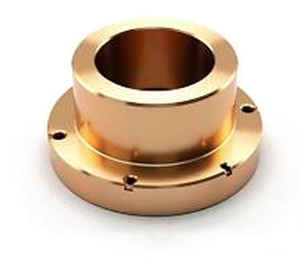

Usinage CNC
Quand la pièce doit être en métal ou d'une grande précision, on l'usine dans la masse. Complément idéal de l'impression 3D.

L’usinage CNC en 3 étapes
Un bloc de matière
On part d'un bloc brut : aluminium, laiton, plastique technique…
La fraise enlève
Une fraise tournant à grande vitesse retire la matière en suivant votre fichier 3D.
Une pièce dans la masse
On obtient une pièce pleine, précise, avec un bel état de surface.
Votre pièce
Envoyez votre fichier : nous confirmons que l’usinage CNC est le bon choix, ou nous vous orientons vers une autre technologie.
Quand le choisir ?
Rendu interactif · glissez pour faire tourner
- Pièces en métal
- Ajustements et alésages précis
- Pièces mécaniques soumises à l'usure ou à la chaleur
- Plaques, supports, petites séries
- Certaines formes internes sont impossibles (réservées à l'impression 3D)
- Plus de chutes de matière qu'en impression 3D
- Taille limitée par le plateau de la machine
Nos machines CNC
Nos matières CNC

Aluminium
Léger · Usinable · Polyvalent
Voir la fiche →CuZnMatériau CNCLaiton
Usinable · Esthétique · Conducteur
Voir la fiche →
Cuivre
Conducteur · Usinable · Esthétique
Voir la fiche →
Bronze
Anti-usure · Autolubrifiant · Durable
Voir la fiche →
Titane
Ultra-résistant · Léger · Biocompatible
Voir la fiche →
POM (Delrin®)
Glissant · Stable · Précis
Voir la fiche →
Ertalon® (PA6)
Tenace · Anti-usure · Amortissant
Voir la fiche →Votre pièce, fabriquée.
Envoyez votre fichier 3D ou décrivez votre besoin : devis instantané avec fichier, devis personnalisé sous 24 h.